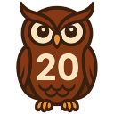

Owl20 Seamlessly Connects D&D Beyond to Owlbear
Owl20 connects DnDBeyond.com with Owlbear Rodeo VTT by capturing roll data from the Beyond20 extension and sending it to the Owl20 Owlbear Extension, allowing dice rolls from your D&D Beyond character sheet to instantly appear in Owlbear Rodeo
🎯 Why Owl20?
Built by Active DMs
Created by experienced Dungeon Masters who use D&D Beyond and Owlbear Rodeo in real campaigns. We built Owl20 to solve our own problem, so we understand what players and DMs actually need.
Privacy First
No data collection, no tracking, no storage. Owl20 only transmits dice roll data in real-time - your character information and browsing history stay private. Learn more about our privacy commitment.
Completely Free
Owl20 is and always will be free. No premium features, no subscriptions, no hidden costs. Created by the D&D community, for the D&D community. Learn about our commitment.
📖 Setup Guides
Full step-by-step instructions for every role and scenario.
👤 Player Setup
Install Owl20 and configure Beyond20 to send your D&D Beyond dice rolls into Owlbear Rodeo. Takes about 5 minutes.
Read the Player Guide →
🎲 DM Setup
Install the Owl20 OBR extension in your Owlbear Rodeo room and enable it for your players. Takes about 3 minutes.
Read the DM Guide →
🔧 Troubleshooting
Rolls not appearing? Extension not loading? Work through our diagnostic checklist — most issues come down to one missed step.
View Troubleshooting →
⚙️ How It Works
A technical deep dive into Owl20's architecture: CustomEvents, postMessage, MutationObserver, and Manifest V3.
Read Technical Details →
🔗 Resources & Links

Owl20 RepoComplete source code for the Owl20 browser extension. Contains all the magic that bridges Beyond20 to Owlbear Rodeo.
 Owl20-Owlbear
Owl20-Owlbear
Source code for the Owlbear Rodeo extension that receives dice roll data. Built with JavaScript for OBR integration.
 Beyond20
Beyond20
The essential browser extension that connects D&D Beyond to virtual tabletops. Owl20 builds upon this foundation.
 Owlbear Rodeo
Owlbear Rodeo
Lightweight virtual tabletop designed for simplicity. Owl20 brings D&D Beyond integration to this popular VTT platform.
🪲 Report Issues
Bug Reports & Feature Requests can be submitted using the github issues page.
 Starry Shore '24
Starry Shore '24
D&D 5.5E 18+ community! New rules, new quests, and endless worlds to explore. Join live games and shape the next chapter.
 Starry Shore '14
Starry Shore '14
18+ D&D 5E community for all skill levels! Join live games, explore the multiverse, and quest without level caps.
 D&D Beyond
D&D Beyond
Official D&D digital toolset for character creation, dice rolling, and campaign management.
❓ Frequently Asked Questions
Have questions about Owl20? We've compiled answers to the most common questions about installation, configuration, troubleshooting, and more.